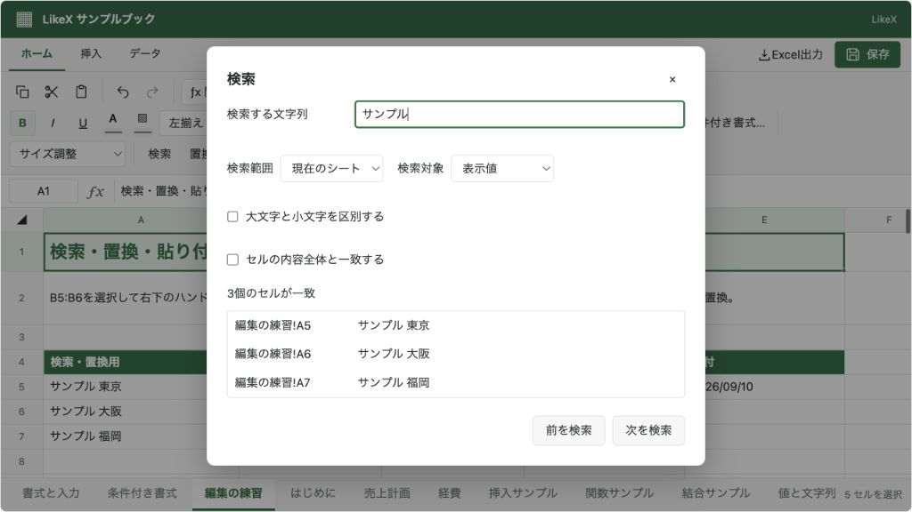

@likex/spreadsheet
検索・置換
表示値または数式・入力値を検索し、一件ずつ、またはまとめて置換します。
画面例を見る ↓検索と置換#
ヘッダーの「検索」「置換」、または Ctrl+F / Ctrl+H から開きます。macOSでは ⌘ も使えます。
- 現在のシート／ブック全体を検索できます。
features.sheets: falseの場合は現在のシートだけです。 - 「表示値」は数式の計算結果と日付・通貨などの表示書式を検索します。「数式・入力値」は
=SUM(A1:A3)などの入力内容を検索します。 - 大文字・小文字の区別、セル全体との一致を指定できます。検索文字列は通常の文字列として扱い、正規表現ではありません。
- 前／次で循環し、結果をクリックすると該当シートとセルを選択します。結果一覧は先頭200件を表示し、前／次では全件を移動できます。
- 「置換」は選択した一致セル（未選択なら先頭）、「すべて置換」は検索条件に一致する全セルを対象にします。一度の置換操作を一度のUndoで戻せます。
置換の既定対象は「数式・入力値」です。「表示値」で置換すると、数式自体も置換後の表示結果へ変わります。たとえば ="会議A" の表示値「会議A」を「会議B」に置換した場合、セルは文字列「会議B」になり、元の数式は残りません。文字列の先頭が = でも、表示値の置換で新しい数式として実行しません。
読み取り専用では検索だけ使えます。置換する値が入力規則に違反した場合は全体を反映せず、元の下書きを維持します。検索文字列を空にした場合は検索しません。
features.search: false で検索と置換を無効にできます。検索を残して置換だけを止める場合は features.replace: false を指定します。
import { findSpreadsheetCells } from "@likex/spreadsheet";
const matches = findSpreadsheetCells(workbook, {
text: "売上",
lookIn: "formulas", // "values"（既定）または "formulas"
matchCase: false,
wholeCell: false,
}, { sheetId: "sales" }); // sheetId省略でブック全体
// 各一致: { sheetId, address, value: 入力値, matchedText: 検索した文字列 }外部操作APIから置換する例です。addresses を省略すると指定シートのすべての一致セルを対象にします。
const result = await spreadsheetRef.current?.executeAsync({
type: "cells.replace",
sheetId: "sales",
query: { text: "旧商品名", lookIn: "formulas", wholeCell: true },
replacement: "新商品名",
addresses: ["A2", "A3"],
});
if (result && !result.ok) console.error(result.message);画面例
{kind=link}
